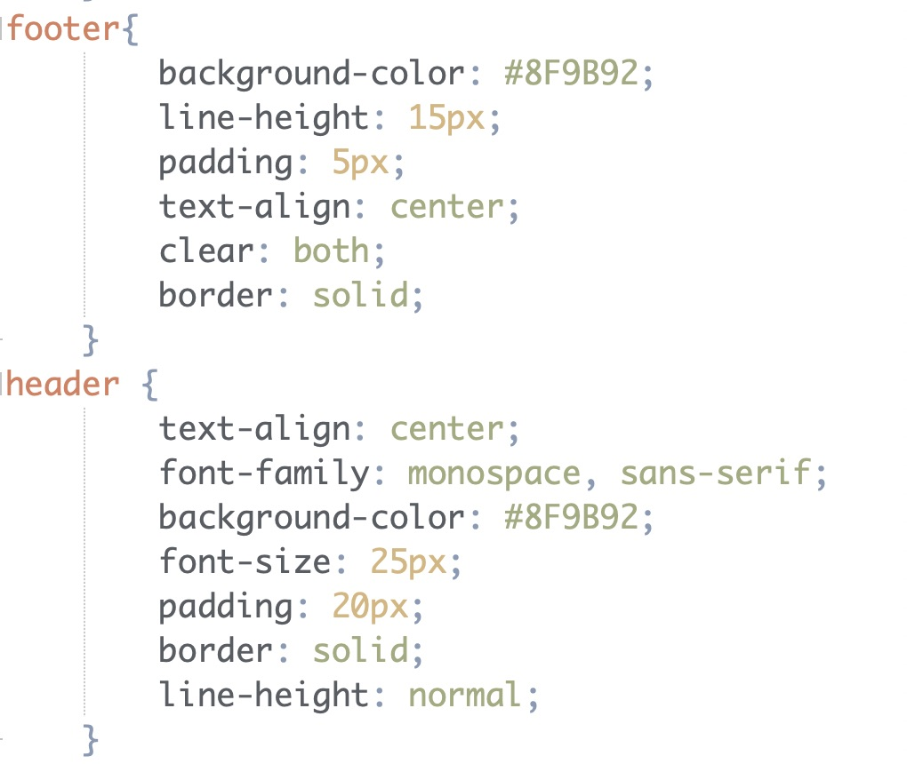
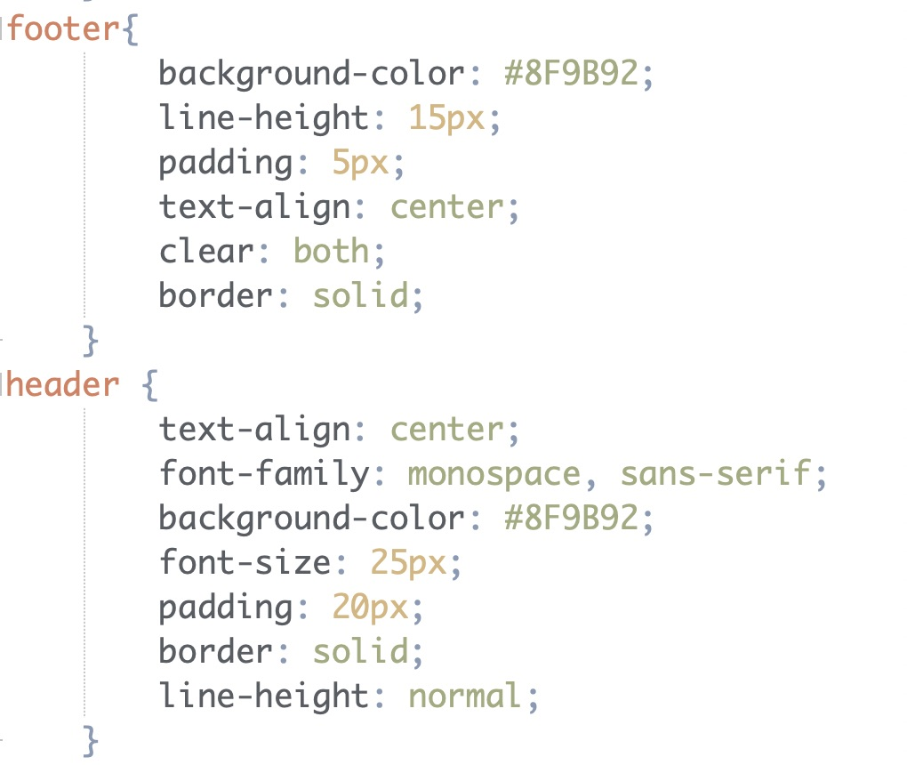

Spring 2021 Project 3 Requirements Summary
- Content of this Webpage
- The content included on this webpage are examples of the implementations
I made of layouts within my website.Also, within this webpage is a reflection
of the improvements I have made for each project completed throughout the course.
- Project 1 Corrections
- For project 1, the only improvement I had to make was adding break tags before the
footer of each webpage. This tag was added within the body of the code.
- Project 2 Corrections
- For project 2, the improvement I had to make for project 3 was including div tags.
However, I did not add many div tags because for project 3 we were supposed to replace
the div tags with a suitable CSS layout tag.
Additional Edits and Enhancements
- Adding a navigation bar to the top of each webpage.
- Created an overall design layout that is consistent throughout the website.
- Including a sidebar when appropriate in the layout.
- Incorporating borders to each webpage for an overall design element.
- Adding pictures of my art to the resumé page.
- Including the box-shadow style.
- Addressed one screen and one resolution size that is more than the browsers default.
- Added more favorite site links to have a total of 9 in each category.
- Added more chapters to the requirements page.
- Included positioning schemes to the navigation bar and images on the resumé page.
- Screen and Size Styling

 Applying the screen and size styling to the external style sheet allows for the webpages to
adjust when they are viewed on different devices. We include this to make the website available for
anyone to view.
Applying the screen and size styling to the external style sheet allows for the webpages to
adjust when they are viewed on different devices. We include this to make the website available for
anyone to view.
- CSS Boxes

 For the four boxes on this webpage I added a solid border, padding, a width, and a height. Then I
text-aligned the text and my favorite part is the shadow around the box. Lastly, there is a margin style
so the border is not connected to the side bar.
For the four boxes on this webpage I added a solid border, padding, a width, and a height. Then I
text-aligned the text and my favorite part is the shadow around the box. Lastly, there is a margin style
so the border is not connected to the side bar.
- Positioning Schemes


I implemented the sticky and static positioning. The sticky position is on every webpage attached to
the navigation bar and the static position is on the side bar on the home page.

- HTML Layout Setup
 

 For the layout, I used the HTML layout style within the header, footer, and aside styles.
Within each I have added color, borders, and many other style tags.
For the layout, I used the HTML layout style within the header, footer, and aside styles.
Within each I have added color, borders, and many other style tags.
Home |
Resumé | Education |
Favorites | Requirements | Layouts